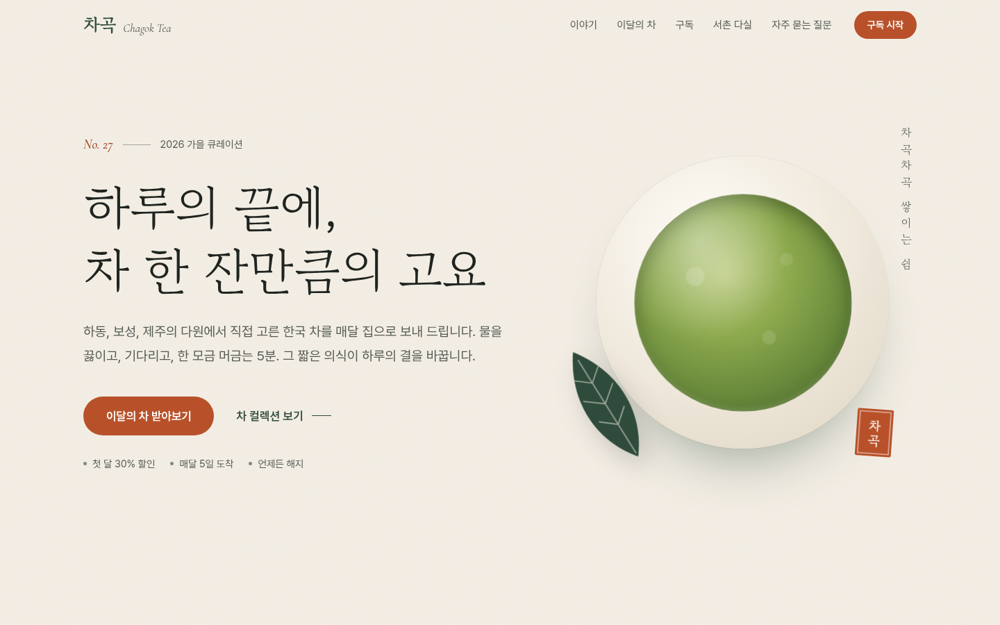
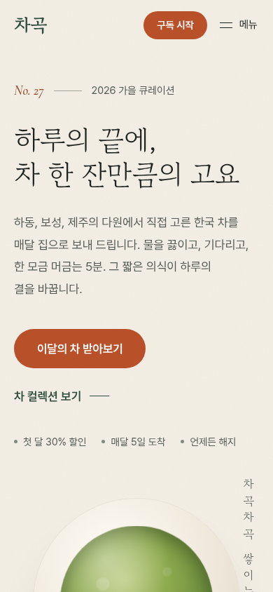
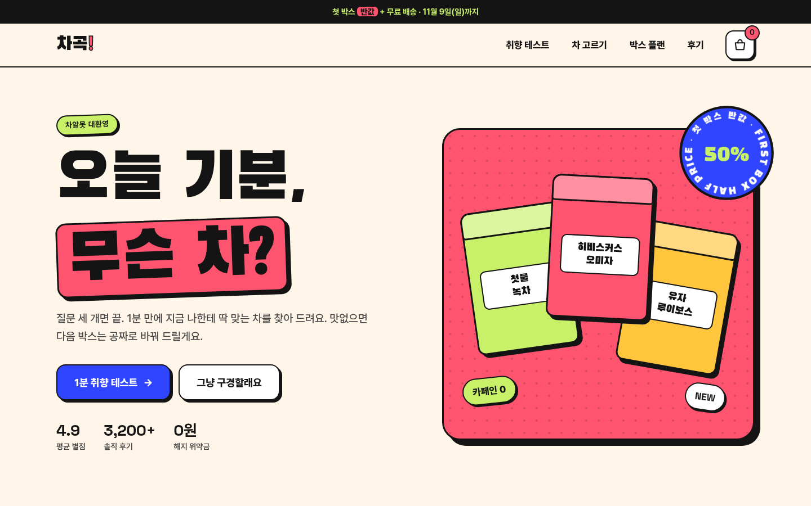
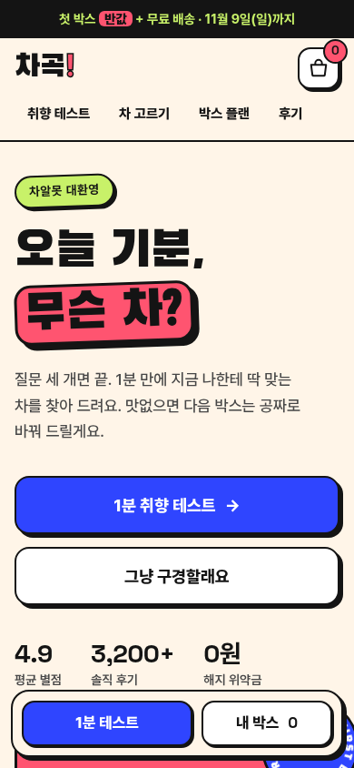
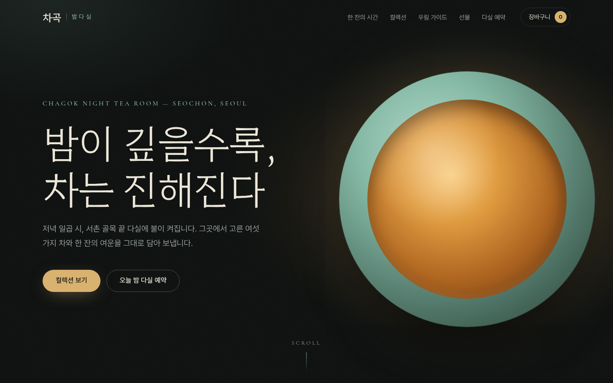
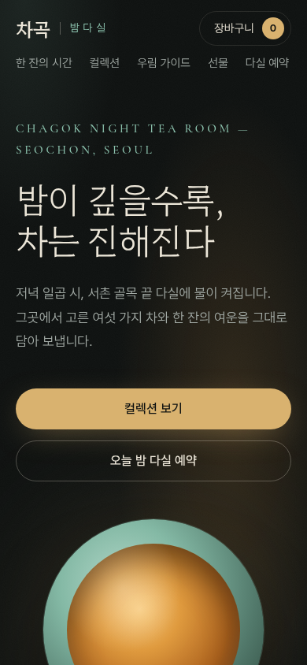

리서치에서 뽑은 여섯 가지 기준
- 01
목표가 하나로 보인다
페이지마다 가장 중요한 행동 하나를 정하고, 크기·색·여백의 위계로 그것부터 보이게 합니다.
- 02
색은 역할로 나눈다
바탕 60, 키와 보조 30, 포인트 10. 포인트 색은 누를 곳에만 써야 눈에 띕니다(폰 레스토프 효과).
- 03
모두가 읽을 수 있다
본문 대비 4.5:1, 큰 글자와 UI 요소 3:1, 누를 곳은 24px 이상. 한글은 단어 단위 줄바꿈과 1.7 안팎의 행간.
- 04
익숙하게, 적게 고르게
사람들은 다른 사이트에서 익힌 방식을 기대하고(제이콥의 법칙), 선택지가 적을수록 빨리 결정합니다(힉의 법칙).
- 05
모든 행동에 바로 반응한다
누르면 눌린 티가 나고, 결과는 말로 알려 줍니다. 진행 상황이 보이면 끝까지 갑니다(목표 경사 효과).
- 06
빠르고 가볍다
LCP 2.5초, INP 200ms, CLS 0.1 이내가 목표. 이 프로젝트는 쓰는 글자만 남겨 한글 폰트 6.5MB를 134KB로 줄였습니다.


컬러 시스템
키 송엽
#2F4B3C로고, 제목, 선택 상태, 마지막 CTA 띠보조 이끼 세이지
#A9B59F점, 태그 바탕, 장식에만 (글자에는 쓰지 않음)바탕 한지
#F4EFE6한지 그늘 #EBE4D6로 구획을 바꿈포인트 감
#B8512A주 CTA, 낙관, 읽기 진행 막대. 작은 글자는 #9C4322
조화: 차가운 송엽과 따뜻한 감빛의 온도 대비. 채도를 낮춰 차분하게.
타이포그래피
하루의 끝에, 고요 No. 27
제목 고운바탕 · 본문 Pretendard 17px / 행간 1.8 · 숫자 Cormorant Garamond Italic
레이아웃
넓은 여백, 1px 선으로 나눈 3단 그리드, 섹션 번호(01–06)로 잡지 같은 읽기 흐름을 만듭니다.
UX 장치
- 아래로 읽을 땐 숨고, 위로 올리면 나타나는 헤더 + 읽기 진행 막대
- 차 종류 필터(토글 버튼). 결과 개수를 스크린리더에도 알림
- 월/연 결제 전환 시 월 환산가와 1년 총액을 함께 표시
- 추천 플랜 하나만 강조. 버튼 문구는 “차곡 플랜으로 시작”처럼 행동 그대로
- 틀린 이메일은 무엇이 틀렸고 어떻게 고칠지 함께 안내


컬러 시스템
키 히비스커스
#FF5470히어로 패널, 플랜 구획, 강조 단어. 위에는 검정 글자만보조 말차 라임
#C8F169퀴즈 구획, 선택된 카드, 스티커바탕 오트밀크
#FFF5E8먹선 #141414와 함께 모든 색을 묶어 줌포인트 코발트
#2F45FF“1분 취향 테스트”, “이 박스로 시작하기” 같은 주 CTA 전용
조화: 핑크·라임·코발트가 색상환에서 고르게 떨어진 삼각 배색에 가까운 고채도 조합. 2.5px 먹선과 같은 방향의 그림자가 산만함을 잡아 줌.
타이포그래피
오늘 기분, 무슨 차?
제목 검은고딕(Black Han Sans) · 본문 Pretendard 500 · 숫자·영문 Space Grotesk
레이아웃
두꺼운 테두리 카드, 4–10px 하드 섀도, 기울인 스티커. 누르면 그림자가 사라지며 실제로 눌리는 것처럼 보입니다.
UX 장치
- 한 화면에 질문 하나, 선택지 셋인 1분 취향 테스트 + 진행 막대
- 결과는 “밤 + 상큼·새콤 + 카페인 0 = 유자 루이보스”처럼 이유까지
- 담으면 배지 숫자가 튀고 토스트가 알려 줌 (조사 을/를 자동 처리)
- 모바일은 엄지가 닿는 아래쪽에 핵심 행동 고정(피츠의 법칙)
- 박스 크기를 고르는 즉시 첫 박스 가격과 다음 결제액을 다시 계산


컬러 시스템
키 청자
#8EC5B0키커, 라벨, 단계 번호, 포커스 링, 찻잔보조 심청
#2C4A40선택된 칩 면, 우림 가이드 배경의 빛바탕 밤먹
#0E1110순수한 검정 대신 녹빛 먹색. 카드는 #141917 → #1B221F로 한 단계씩 밝게포인트 금박
#D9B26F주 CTA, 가격, 타이머 고리
조화: 청자 계열 단색조에 따뜻한 금빛 하나. 글자는 순백 대신 아이보리 #ECE6D8로 눈부심을 줄임.
타이포그래피
밤이 깊을수록, Night Tea
제목 함렛 250–300 · 본문 Pretendard 350 (어두운 바탕에서는 한 단계 가볍게) · 영문 Cormorant Garamond
레이아웃
화면을 꽉 채운 히어로, 스크롤해도 고정된 찻잔, 좌우로 넘기는 컬렉션 레일. 긴 크로스페이드(1.4초)로 장면을 바꿉니다.
UX 장치
- 스크롤리텔링: 단계가 바뀔 때마다 찻잔 속 물이 차로 우러남
- 우림 타이머: 차를 고르면 온도·시간이 바뀌고, 끝나면 소리 없이 화면과 스크린리더로 알림
- 장바구니는 네이티브 dialog 서랍(포커스 가두기, Esc 닫기)
- 무료 배송까지 남은 금액을 막대로 표시(목표 경사 효과)
- 예약 버튼이 “오늘 20:00 · 2명 예약하기”처럼 고른 내용을 그대로 말함
한눈에 비교
| 항목 | V1 고요 | V2 톡톡 | V3 밤다실 |
|---|---|---|---|
| 디자인 철학 | 덜어내기, 에디토리얼 | 촉감과 놀이 | 몰입과 여운 |
| 누구에게 | 퇴근 후 쉼을 찾는 30–40대 | 차가 처음인 20대 | 선물을 고르는 30–40대 |
| 핵심 전환 | 월 구독 시작 | 취향 테스트 → 첫 박스 | 선물 세트 · 다실 예약 |
| 바탕 / 키 | 한지 #F4EFE6 / 송엽 #2F4B3C | 오트밀크 #FFF5E8 / 히비스커스 #FF5470 | 밤먹 #0E1110 / 청자 #8EC5B0 |
| 보조 / 포인트 | 이끼 세이지 #A9B59F / 감 #B8512A | 말차 라임 #C8F169 / 코발트 #2F45FF | 심청 #2C4A40 / 금박 #D9B26F |
| 서체 | 고운바탕 + Pretendard | 검은고딕 + Pretendard + Space Grotesk | 함렛 + Pretendard + Cormorant |
| 모서리 · 그림자 | 4px, 거의 없는 그림자, 1px 선 | 14–32px, 하드 섀도, 2.5px 먹선 | 14–24px, 그림자 대신 면 밝기와 빛 번짐 |
| 모션 | 느린 페이드 0.9초 | 탄성 있는 반동 0.12–0.5초 | 긴 크로스페이드 1–1.4초 |
| 대표 UX | 필터, 결제 주기 전환, 진행 막대 | 3문항 퀴즈, 토스트, 하단 고정 바 | 스크롤리텔링, 타이머, 서랍형 장바구니, 좌석 예약 |
| 빠지기 쉬운 함정과 대응 | 너무 조용하면 CTA가 묻힘 → 감빛은 CTA에만 | 산만함 → 테두리·그림자 규칙을 하나로 통일 | 어두운 화면의 가독성 → 아이보리 글자, 가벼운 굵기, 대비 검증 |
세 버전 모두 node tools/contrast.mjs로 실제 CSS 색 토큰의 대비를 검사했고, 필수 조합 30개가 모두 WCAG 2.2 AA를 통과했습니다. 결과는 docs/contrast-report.md에 있습니다.